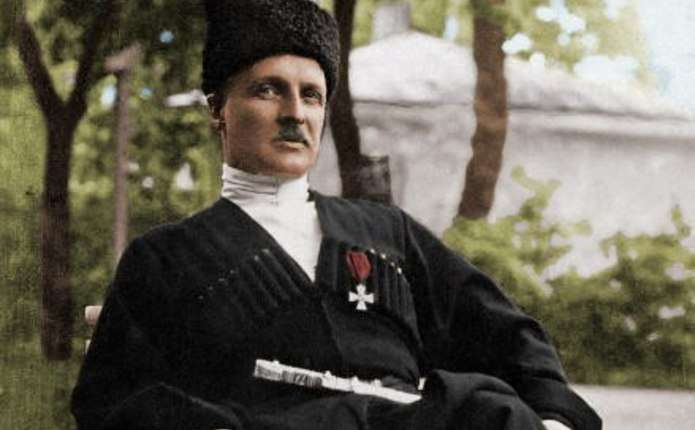

Політика 1917—1918
На з'їзд прибули сотні делегатів не лише від українських частин, але й російських. Суперечки між прихильниками різних політичних течій почалися вже під час обрання голови з'їзду. Київські військові пропонували кандидатуру Миколи Міхновського за його попередні заслуги у формуванні українських військових частин. Представники соціалістичного крила висунули кандидатуру Симона Петлюри. Для вирішення суперечок прийняли компромісне рішення: було обрано не голову з'їзду, а президію, члени якої мали головувати по черзі. У цій президії Симон Петлюра представляв фронтові частини, Микола Міхновський — тилові, Володимир Винниченко — Центральну Раду, матрос Грамотний — Балтійський флот. Почесним головою обрали Михайла Грушевського, а також запросили командира 1-о українського полку імені Богдана Хмельницького підполковника Юрія Капкана.
Завдяки своїм палким виступам на з'їзді та виголошеним промовам Симон Петлюра здобув популярність серед делегатів. Він поводився прагматично, раціонально, демонстрував, що спершу необхідно зважити всі обставини, а лише потім приймати рішення. За його доповіддю з'їзд прийняв резолюцію "Про українізацію армії". Було оголошено про необхідність вимагати визнання автономії України у Тимчасового уряду.
На з'їзді панували в основному автономістські погляди. Міхновський та його прихильники дотримувалися самостійницьких поглядів, проте більшість делегатів його не підтримували. Дану радикальну позицію вважали неправильною та небезпечною. Грушевський наголошував на необхідності мирної боротьби за автономію. Цю ж політику сповідувала і Центральна Рада. Петлюра не міг протестувати проти цих поглядів, адже був членом УСДРП, яка також сповідувала ідеї автономізму. Тому він проголошував, що долю України не можна відділити від долі Росії, адже вони пов'язані напряму, а поразка Росії автоматично означатиме поразку й України.
У результаті з'їзду Петлюра був обраний до Українського генерального військового комітету (УГВК), з 21 травня обраний головою цієї організації. Водночас увійшов до Центральної Ради.
У червні 1917 року було проведено ІІ Всеукраїнський військовий з'їзд у Києві. На цей раз кількість делегатів перевищила відмітку у дві тисячі осіб. На даному з'їзді лунала критика плану наступу Керенського та панувала думка, що єдиним результатом цією операції стануть великі втрати серед українців. Сам Петлюра на цьому з'їзді, представляючи доповідь про стан армії, одночасно заявляв і про те, що формування великої української армії є необхідним, але, одночасно з тим, містить елементи небезпечності.
З'їзд продемонстрував широку підтримку військовими Центральної Ради. Крім того, вони оголосили про потребу формування самостійних українських державних і військових структур. З'їзд вирішив якнайшвидше розробити план українізації війська і вжити всіх заходів для негайного втілення його в життя. На з'їзді також було обрано тимчасову Раду військових депутатів у складі 132 осіб, які увійшли до складу Центральної Ради. Після цього було видано Універсал який проголошував автономію України у складі Росії.
Невдовзі був створений Генеральний секретаріат — вищий виконавчий орган. Тоді ж Петлюра обійняв посаду Генерального секретаря з військових справ. Головним завданням Петлюри як військового діяча була українізація армії. І якраз тут, працюючи над створенням української армії, він зустрів спротив частини членів Центральної Ради, зокрема, украй пацифістську позицію займав Винниченко. Крім того, українізацію призупиняли напружені відносини з Тимчасовим урядом. Петлюра увійшов до комісії Центральної Ради, яка мала займатися веденням переговорів з Керенським. Головні суперечки точилися навколо питання про повноваження Генерального секретаріату, а також розглядалися проблеми українізації всіх частин на території України та заміни посадовців військових адміністрацій на українців.
Переговори з Тимчасовим урядом закінчилися взаємними поступками та виданням Другого Універсалу, який фактично був кроком назад на шляху до самостійності, що спричинило різку критику з боку самостійників. Результатом цього став виступ 2-о українського полку імені гетьмана Павла Полуботка. Петлюра входив до делегації, яка вела переговори із заколотниками. Виступаючи перед ними, він закликав солдатів не ставати на шлях анархії, адже це порушить плани УГВК щодо українізації армії. Проте ці переговори результату не дали. Солдати вимагали від Тимчасового уряду визнати Центральну Раду та Генеральний секретаріат єдиними легітимними органами влади в Україні, а від Центральної Ради — підтримати їх виступ. Проте цього не сталося. Результатом же виступу стала висилка полку на фронт, де невдовзі майже весь він був знищений.
25 жовтня 1917 року відбувся більшовицький переворот, внаслідок чого до влади в Росії прийшов Ленін.
13 листопада Петлюра віддав наказ українським військам зайняти всі найважливіші урядові об'єкти Києва. 15 листопада розіслано його відозву до війська:
"Я, яко генеральний секретар по військових справах в Українській Народній Республіці, закликаю всіх вас, мої товариші й друзі, в теперішній час до загальної дружньої роботи. Будьте організовані та з'єдинені — всі за одного і один за всіх. Наше військо молоде, воно тільки становиться на ноги, і ви своєю дисциплінованістю доведете, що являєтесь славними потомками великих предків."
Петлюрі вдалося зорганізувати сердюцькі дивізії, він очолив роззброєння українськими військами прихильних до більшовиків підрозділів та червоної гвардії в столиці[14]. Під час революційних подій Петлюра, декілька разів безжально подавивши спроби більшовицьких переворотів у Києві в листопаді, грудні 1917 та січні 1918 року, довів, що з усього керівництва республіки один лише він був здатен на рішучі дії. Натомість Володимир Винниченко назвав Симона Петлюру головним винуватцем конфлікту з Радою Народних Комісарів у Росії й приклався до його відставки за «перевищення повноважень». На знак протесту проти пробільшовицької орієнтації голови секретаріату 18 грудня 1917 року Петлюра подав у відставку.
Полишивши УГВК, на початку січня, очолив Гайдамацький кіш Слобідської України (ГКСУ). У Києві гайдамаки стали широковідомі ще після вбивства «головного більшовика міста» Леоніда Пятакова[15]. На чолі гайдамак Петлюра брав участь у боях проти червоних. Бойове хрещення гайдамак відбулося на Полтавщині в боях за Гребінку. Згодом ГКСУ взяв активну участь у придушенні січневого повстання проти Центральної Ради. Петлюра особисто керував штурмом «Арсеналу» та боями за Київ. Гайдамаки на чолі з ним першими ввійшли до міста, після звільнення столиці від більшовиків, улаштувавши 1 березня дефіляду на честь перемоги. Соціалісти, які домінували в уряді, зважили на вплив і популярність отамана в армії та знову приписали Симонові Петлюрі «військову змову з метою встановлення правої диктатури». Як наслідок, 12 березня 1918 року його усунуто від командування Гайдамацьким кошем.
Кіш став однією з найбоєздатніших українських частин, а вояки та організатори частини, з котрими Симон пліч-о-пліч у баталіях відстоював Україну — Олександр Удовиченко, Микола Чеботарів, Сергій Дельвіг та Омелян Волох надалі залишались сподвижниками та довіреними особами Петлюри, хоч, як засвідчив приклад останнього, не всі вони виправдали його довіру.
Наприкінці березня 1918 року очолив Київське губернське земство, а за місяць на його базі створив та очолив Всеукраїнський союз земств.
За часів правління Скоропадського
Не позбавлений особистих амбіцій Петлюра після квітневого перевороту в період Гетьманату (29 квітня — 14 грудня 1918 року) посідав скромну, на перший погляд, посаду голови Всеукраїнського союзу земств, ставши не лише політичним суперником Павла Скоропадського, а і його ідеологічним та соціальним антагоністом. Відразу по зміні режиму почав працю задля повалення гетьманства, встиг створити й налагодити чітку діяльність широкої мережі радикального підпілля, виявив самовідданість та організаторський хист. Вів культурно-просвітницькі справи — організував упорядкування могили Тараса Шевченка і Чернечої гори в Каневі. Як згодом висловився його опонент Борис Стеллецький:
"… змушений був звільнити Петлюру за наполяганням німців, які загрожували в іншому разі звільнити його силою. "Саме через земські установи Петлюра поширював свої ідеї на дрібне та середнє селянство, користуючись своєю посадою забезпечив матеріальні та фінансові ресурси посередництвом спілок «Централ», «Українбанк» та «Дніпросоюз», дії яких він координував через Союз земств. Того часу Скоропадський, попри гучні заяви, залишався в колі здебільшого москвофільськи налаштованих великих землевласників та космополітичного «ПРОТОФІСу».
27 липня, за антигетьманський маніфест із вимогою ліквідації поміщицького землеволодіння та повернення землі селянам, заарештований, разом із Миколою Поршем, Юрієм Капканом та іншими. Останніх незабаром випустили, Винниченка тримали на допиті лише добу, Петлюру утримували в Лук'янівській в'язниці майже чотири місяці (27 липня — 12 листопада 1918 року). Зрештою, за допомоги Микити Шаповала, встановлено контакти з німецькими соціалістичними колами в Рейхстазі, котрих змогли переконати посприяти звільненню політв'язня. Відтак із Берліна вчинено сильний тиск на німецьке військове командування в Україні. Колишній держсекретар Гетьманату Микола Могилянський свідчив, що в його розпорядженні був лист від Скоропадського, у котрому той писав, що
"… змушений був звільнити Петлюру за наполяганням німців, які загрожували в іншому разі звільнити його силою."Цей факт погрози німців підтверджував і колишній міністр закордонних справ Дмитро Дорошенко. 12 листопада 1918 року, напередодні антигетьманського виступу Директорії до котрої, через тиск на нараді представників війська, був обраний заочно, Петлюра був звільнений з-під арешту міністром юстиції Української Держави Андрієм В'язловим. Відразу по тому виїхав до Білої Церкви — місця дислокації загону Січових Стрільців Євгена Коновальця.
Антигетьманське повстання
Остаточним ідеологічним приводом до повстання стало підписання 14 листопада Скоропадським «Грамоти про федерацію з Росією». 15 листопада Петлюра, Винниченко, Осецький та командири Січових Стрільців в Білій Церкві обговорили план повстання. Було прийнято рішення про те, що очолити повстання має штаб Петлюри. Тоді ж, за своїм підписом як Головного Отамана Військ УНР та підписом начальника штабу республіканських військ Олександра Осецького, видав лист-Універсал до українського народу, у якому закликав до боротьби за волю України. 16 листопада були роззброєні німецькі військові в Білій Церкві. 17 листопада солдати Петлюри взяли Фастів, а вже наступного дня Петлюра приймав звіт Андрія Мельника про результати Мотовилівського бою.
Проте далі шлях до Києва був складним. На станції Васильків розташувалися офіцерські дружини під командуванням Святополка-Мирського, бронепоїзд та полк сердюків, які були направлені спеціально для подавлення повстання. Проте солдати Святополка-Мирського, потрапивши під кулеметний вогонь Січових Стрільців, зазнали великих втрат, а сердюки діяли доволі пасивно. У результаті цього гетьманські війська були розбиті. Тоді ж Скоропадський оголосив про загальну мобілізацію колишніх офіцерів імператорської армії, проте відгукнулися далеко не всі, але й ті, хто відгукнувся, не всі були готові відправитися на фронт.
19 листопада солдати Петлюри підійшли впритул до Києва, проте були зупинені. Скоропадський призначив головнокомандувачем своїми військами графа Федора Келлера, який славився своїми антиукраїнськими поглядами, що спричинило негативну реакцію з боку українських офіцерів у складу гетьманської армії. Через це на бік Петлюри перейшли Запорізький корпус та Сірожупанна дивізія, деякі дрібніші частини. Через тиждень Келлера зняли з посади. У результаті цього російські військові, які підтримували гетьмана, покинули Київ. Новим головнокомандувачем став Олександр Долгоруков.
20 листопада із заходу до Києва підійшов Чорноморський кіш, який також перейшов на сторону Директорії. Почалися позиційні бої.
На 27 листопада було заплановано почати новий наступ. Проте він міг завадити евакуації німецьких частин, які перебували в Києві. Тому німецькі солдати штурмом відбили станцію Шепетівка і висловили ультиматум до повстанців: вони повинні були відійти від Києва на 30 км і відкласти спроби подібних наступів до моменту евакуації усіх німецьких частин із Києва. Через кількісну перевагу німців Петлюра вирішив прийняти цей ультиматум. 28–30 листопада повстанці відійшли від західних та південних околиць столиці. Натомість вони почали її блокаду зі сходу та півночі.
6 грудня Директорія наказала німецьким військам покинуту всю територію УНР. До цього часу кількість військ Петлюри зросла до 18 тисяч осіб, із яких був сформований новий корпус, який готувався до нового наступу на Київ. До 12 грудня кількість повстанців зросла до 30 тисяч осіб. Було проведено роззброєння німецьких гарнізонів навколо столиці. Німці, оточені солдатами Петлюри, просто складали зброю без бою. Тоді ж німецьке командування погодилося не заважати наступу Директорії на Київ.
13 грудня почався штурм столиці. Гетьманські війська, які кількісно поступалися повстанцям, не могли чинити належного спротиву. Наступного дня, 14 грудня, Київ було взято. 19 грудня Директорія тріумфально прибула до столиці. Наступного дня бої повністю припинилися. Вся територія УНР перейшла під контроль Директорії.
1919—1920 роки. Союз із ЗУНР
У Директорії Петлюра відповідав за міністерства військових та морських справ, а також мистецтва й народного здоров'я. З 28 січня, після проголошення Акту Злуки, п'ятірку членів Директорії доповнили представником від Західноукраїнської Народної республіки — Євгеном Петрушевичем. Від 11 лютого Головний отаман вийшов із лав УСДРП. Після відставки Винниченка Петлюра очолив Директорію, отримавши диктаторські повноваження. Наприкінці лютого відвідав Бережани та Стрий. 27 лютого в Ходорові зустрівся з представниками дипломатичної місії, котра прибула на переговори про лінію розмежування Української Галицької Армії й польської армії. Під час зустрічі поставив умову визнання УНР та ЗУНР, надання підтримки в боротьбі проти більшовиків
Петлюра рішуче вимагав оголошення війни РРФСР. Через протидію Винниченка, котрий прагнув порозумітися з московськими більшовиками та вів із ними перемовини про мир, війну оголосили лише 16 січня — коли більшовицькі війська вже взяли Харків, Чернігів і підійшли до Полтави. Отримавши одноособову владу над військом, поділив армію на три угруповування: Правобережне (під орудою Олександра Шаповала), Східне (Євген Коновалець) та Південне (Андрій Гулий-Гуленко)[18]. Проте в січні — квітні 1919 року основна маса військ Директорії була розгромлена більшовиками, які захопили Київ. Рештки українських військ були притиснуті до ріки Збруч. Проте, скориставшись наступом Денікіна, вони разом з УГА почали власний контрнаступ. На чолі об'єднаних українських збройних сил Петлюра 30 серпня 1919 року здобув Київ, однак вже наступного дня під тиском Збройних сил Півдня Росії (ЗСПР) був змушений полишити місто[19].
Щодо стосунків Симона Петлюри з Євгеном Петрушевичем, то вони визначались, зокрема, відмінностями світоглядів.[20]Обидва діячі мали частково різні тактичні бачення шляхів виходу зі складної ситуації, у якій опинилась УНР та ЗУНР (зокрема, Петрушевич вважав необхідним негайно створити правий уряд, який вів би перемовини з Денікіним[21]). Існував дуалізм армій та урядів.
Головний отаман перебував у містах Чортків, Борщів, де 8 липня 1919 року проводив переговори з Президентом ЗУНР[23]. Історик Василь Іванис вказує на те, що Петлюра був відомим у Галичині серед мас, існував «1-й Тернопільський полк імені С. Петлюри»[24]. На зустрічі, ураховуючи безвихідність ситуації, ухвалили рішення про відхід УГА та уряду ЗУНР за річку Збруч
Восени ситуація погіршилась — епідемічний висипний тиф та недостатня забезпеченість армії породили внутрішні суперечки. 4 листопада в Жмеринці відбулася нарада за участі представників урядів Директорії УНР та Диктатури ЗУНР. За спогадами Олександра Доценка, Петлюра в ці дні зазначив:
"Для мене тепер ясно, що галичани з їх симпатіями до Москви сами загинуть і нам дихнути не дадуть. Та годі їх переконати в противному, як нас у тому, що було б добре з Москвою…"Зрештою командування УГА — Мирон Тарнавський, Альфред Шаманек та Альфонс Ерле — не ставши питати згоди чи поради з Євгеном Петрушевичем, «через катастрофічний стан війська»[27] самочинно підписали сепаратний Зятківський договір із командуванням ЗСПР[28]. Це саме в той час, коли, згідно з передбаченням Петлюри, біла армія перебувала напередодні своєї остаточної ліквідації армією більшовиків[29]. Ситуація погіршувалась тим, що відразу після його підписання війська генерала Антона Денікіна, користуючись нагодою, розпочали наступ на позиції військ УНР, змусивши їх відступити, адже раптово полишені галицькими вояками ділянки фронту залишилися без прикриття[30][31]. 9 листопада в Кам'янці-Подільському Петлюра скликав спільне засідання Директорії й уряду для обговорення питання про «зраду» частини галичан. 15 листопада Україну покинули Федір Швець та Андрій Макаренко, останні, крім Петлюри, члени Директорії. Віднині Петлюра став одноосібним диктатором України. Петрушевич видав наказ заарештувати Тарнавського. Проте договір із білогвардійцями після перегляду умов в Одесі 17 листопада все ж був офіційно підписаний — УГА підпорядковано ЗСПР, вирішення політичної долі ЗУНР за договором не розглядали, оскільки на той час то була «держава без території». Текст договору потрапив до штабу Петлюри 26 листопада, під впливом чуток про «галицьку зраду» та ще не знаючи, що група Січових Стрільців лишилася в складі Збройних сил УНР, гайдамаки Омеляна Волоха роззброїли стрілецький полк Івана Андруха, однак цю ситуацію вдалося владнати[32].
2 грудня 1919 року за погодженням із Петлюрою дипломатичною місією УНР у Варшаві на чолі з Андрієм Лівицьким була підписана декларація щодо західних кордонів країни з польським урядом. Андрій Жук, на початок політичної діяльності котрого великий вплив мав Симон Петлюра, але згодом, зважаючи на власні кооператорські інтереси, перейшов на бік захисту позицій уряду ЗУНР, вважав її помилкою[33]. 4 грудня 1919 року делегація ЗУНР, на чолі зі Степаном Витвицьким, оголосила про розрив Акту Злуки в односторонньому порядку посольству УНР у Варшаві[34]. 5 грудня Головний Отаман віддав наказ про перехід армії в Зимовий похід.
6 грудня виїхав до Варшави для організації воєнно-політичного союзу з Польщею проти більшовицької Росії. За його ініціативою український і польський уряди підписали в квітні 1920 року Варшавський договір, який однак не був ратифікований УНР та РП.
Симон Петлюра та Юзеф Пілсудський
У серпні 1919 року в Польщі перебувала дипломатична місія на чолі з Пилипом Пилипчуком, що негативно розцінила частина галицьких політиків. Власне їх обурили не так самі перемовини, як організована польськими урядовцями фальсифікація їхнього перебігу, котру уряд ЗУНР сприйняв за правду. До цього особливих зусиль доклав Ян Падеревський з використанням псевдодипломата «від УНР», полковника Б. Курдиновського, котрий, не маючи на те жодних прав та повноважень підписав ряд документів. Петлюра, дізнавши про існування та діяльність останнього, наказав Андрієві Лівицькому негайно викликати його до Кам'янця, аби зупинити злочинну діяльність та вимагати пояснень. Курдиновський, дізнавши про це, отримавши гроші від Падеревського, наступного дня втік до Парижа[36]. Договір, підписаний ним, а також заяви Пилипчука були визнані недійсними на спільному засіданні Директорії УНР та уряду ЗУНР 26 вересня 1919 року в Кам'янці-Подільському[37]. Головний отаман у цей час переважно перебував безпосередньо на фронті, Андрій Макаренко та Федір Швець вели кабінетні розбірки з Євгеном Петрушевичем. Зрештою вирішено послати до Варшави спільну дипломатичну місію з представників Директорії та Диктатури задля встановлення перемир'я та протибільшовицького фронту. Місія за згодою Петрушевича[22], на чолі з Лівицьким, відбула до Варшави 3 жовтня.
Наприкінці 1919 року Україна опинилась у вкрай тяжкому становищі — поразки на фронтах, окупація майже всієї її території та договір галичан з денікінцями, що вимагало негайних рішень. Як зазначав Петлюра в листі до міністра закордонних справ Лівицького:
"В цей час полагодження наших стосунків з Польщею могло би нас врятувати, — дати нам базу деяку, зносини зі світом і перспективи. Дуже жалко, що ми цих переговорів не почали раніше: може б, мали більш сприяючі для нас обставини для заключання договору з Польщею"4 грудня 1919 року через свого ад'ютанта Юзеф Пілсудський запросив Симона Петлюру до Варшави. 9 грудня вони зустрілися в Бельведері[pl] й обговорили питання про україно-польські стосунки та більшовицьку загрозу[39].
Підписали Варшавський договір — міждержавну угоду Польщі та УНР, за яким в обмін на визнання незалежності УНР і військову допомогу Петлюра дав згоду визнати українсько-польський кордон по річці Збруч і далі по Прип'яті до її гирла. За договором польський уряд Юзефа Пілсудського скасував наміри розширення території Польщі до кордонів Речі Посполитої 1772 року та визнав УНР.
Невдовзі об'єднані польсько-українські війська почали спільне ведення бойових дій проти більшовиків. У червні 1920 року вони навіть змогли відвоювати Київ. Проте через незлагоджені дії та постійні суперечки між поляками та українцями цей союз не був ефективним. Невдовзі війська Тухачевського відбили у поляків усю звільнену ними раніше територію України. Зрештою, Польща уклала Ризький мирний договір із більшовицькою Росією, проігнорувавши уряд УНР та його вимоги, і віддавши колишнього союзника на поталу сильнішому ворогові[40].